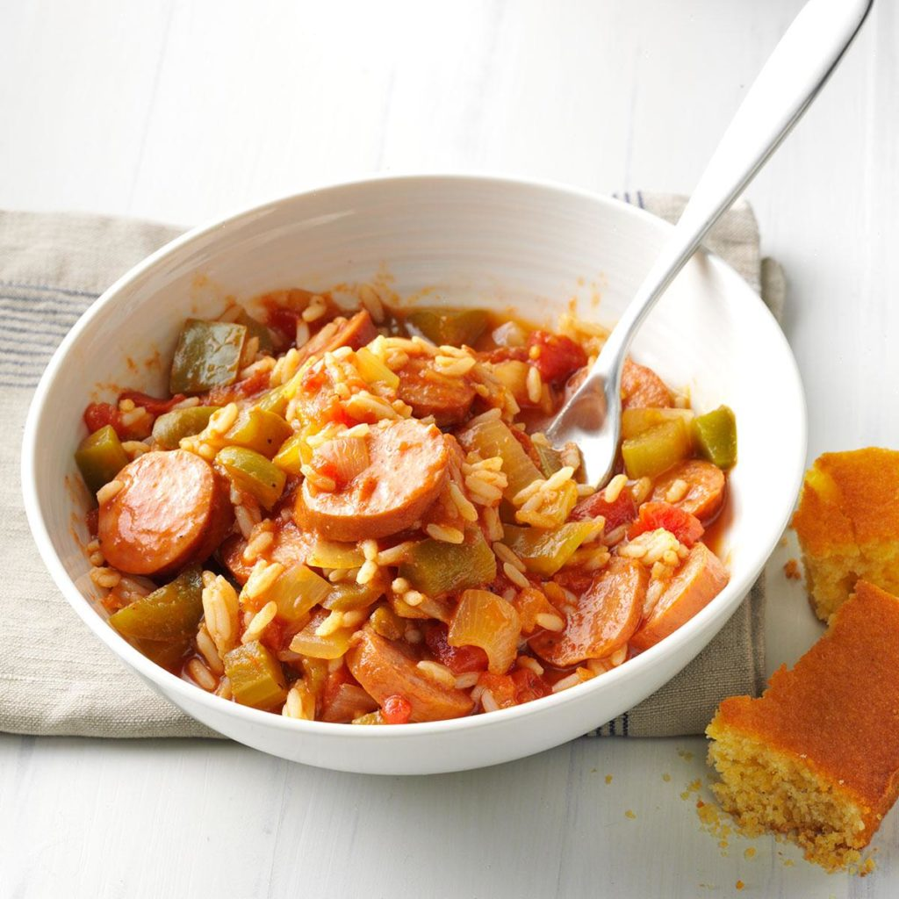

Shortcut Sausage Jambalaya
Ingredients
1 package (8.8 ounces) ready-to-serve long grain rice
1 tablespoon butter
1 small onion, chopped
1 celery rib, chopped
1 small green pepper, chopped
1 package (14 ounces) smoked turkey kielbasa, sliced
1/4 teaspoon salt
1/4 teaspoon garlic powder
1/4 teaspoon pepper
1/8 teaspoon cayenne pepper, optional
1 can (14-1/2 ounces) no-salt-added diced tomatoes, undrained
1 cup salsa
Dash instant coffee granules
Directions
- Heat rice according to package directions. Meanwhile, in a large skillet, heat butter over medium-high heat. Add onion, celery and green pepper; cook and stir 4-6 minutes or until tender. Stir in kielbasa, salt, garlic powder, pepper and, if desired, cayenne; cook and stir 2-3 minutes or until kielbasa is browned.
- Add tomatoes, salsa and coffee granules; heat through. Stir in rice. Freeze option: Do not heat or add rice. Freeze cooled meat mixture in a freezer container. To use, partially thaw in refrigerator overnight. Heat rice according to package directions. Place meat mixture in a large skillet; heat through, stirring occasionally and adding a little water if necessary. Proceed as directed.
Nutrition Facts
1-1/2 cups: 297 calories, 10g fat (4g saturated fat), 70mg cholesterol, 1398mg sodium, 32g carbohydrate (7g sugars, 2g fiber), 18g protein.
Total Time
Prep/Total Time: 20 min.